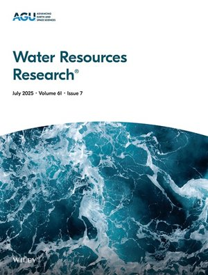
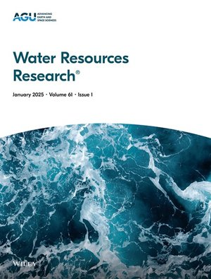
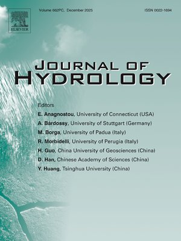
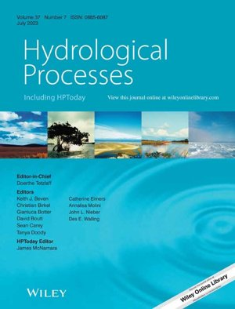

Deep learning and physics-informed hydrological modeling, focused on data-sparse and human-influenced watersheds.
My research in this domain focuses on improving hydrological modeling and streamflow prediction by integrating physics-based and data-driven approaches. Together, the following studies explore how deep learning and hybrid differentiable modeling can enhance streamflow estimation under diverse conditions — from data-sparse catchments and intermittent observations to large-sample and human-influenced systems. These efforts aim to develop more reliable and adaptable hydrological forecasting frameworks for real-world water resource management.

Develops a hybrid differentiable process-based hydrological model (dPLHBVRes) that integrates reservoir dynamics within a neural-parameterized HBV framework. The model enables joint learning of streamflow and unobserved internal hydrological states, bridging the gap between process understanding and predictive performance. It demonstrates that combining process knowledge with data-driven flexibility improves model reliability and interpretability in human-influenced catchments.

Develops LSTM-based framework to estimate daily streamflow from aggregated or intermittent observations, addressing the challenge of temporal gaps in the data. The study shows that reliable daily predictions can be achieved even with monthly or weekly observations, offering a practical solution for hydrological modeling in data-limited and sparsely sampled catchments.

Evaluates a mass-conserving LSTM against a standard LSTM across hydrologically diverse, human-influenced Indian watersheds. MC-LSTM delivers higher accuracy, reduced bias, and improved high-flow representation, particularly in highly regulated basins. The study underscores the value of physics-guided, mass-conserving deep learning models for more robust and reliable hydrological forecasting.

The first large-sample evaluation of LSTM-based hydrological model across Indian catchments. The study demonstrates that DL models can significantly improve streamflow predictions over conventional methods, even under data-scarce conditions. It highlights how data integration across diverse catchments enhances model generalization and identifies the limitations in semi-arid and non-perennial basins.
LSTM and hybrid deep learning frameworks for daily streamflow forecasting where observations are aggregated, intermittent, or entirely absent.
Integrating reservoir and dam dynamics into differentiable hydrological models to improve interpretability alongside predictive skill.
Multi-model ensemble frameworks and AHP–machine learning integration for fluvial flood inundation and hazard mapping in ungauged basins.
Co-developer of CAMELS-IND — hydrometeorological time series and catchment attributes for 228+ catchments across Peninsular India.
Assessing physical interpretability of AI models in watersheds shaped by dams, diversions, and other human interventions.
Exploring how shifting hydroclimatic regimes affect flood risk and streamflow regimes across the Indian subcontinent and beyond.
Tools: Python, R, MATLAB, MIKE Hydro River, MIKE Flood, MIKE 11/21, HEC-RAS, ArcGIS, QGIS, RIBASIM, SewerGEMS, WaterGEMS, StormCAD, EPANET, Google Earth Engine.